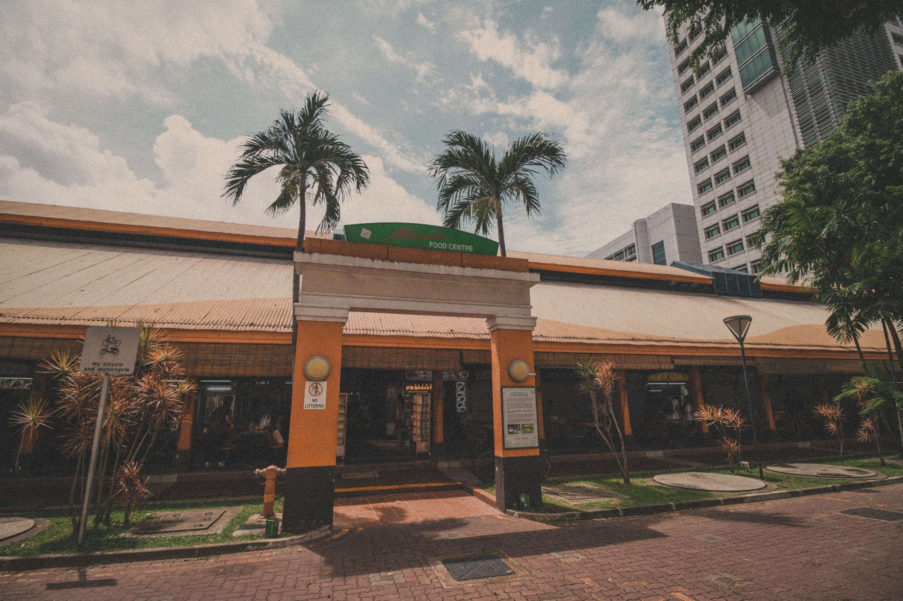
Many fawn over our rich culinary heritage, which has been defined by the humble hawker centres scattered all across the island. If you need a one-stop guide to the best hawker foods in the city, here are Singapore’s best.
Step into any hawker centre in Singapore and you’ll come across a dizzying array of dishes and food traditions — anything from regional Chinese cuisines, traditional dishes from the Malay Archipelago and South Asia, and uniquely Singaporean dishes that you won’t be able to get your hands anywhere else.
Here’s where you’ll find some of the best hawker food in Singapore.
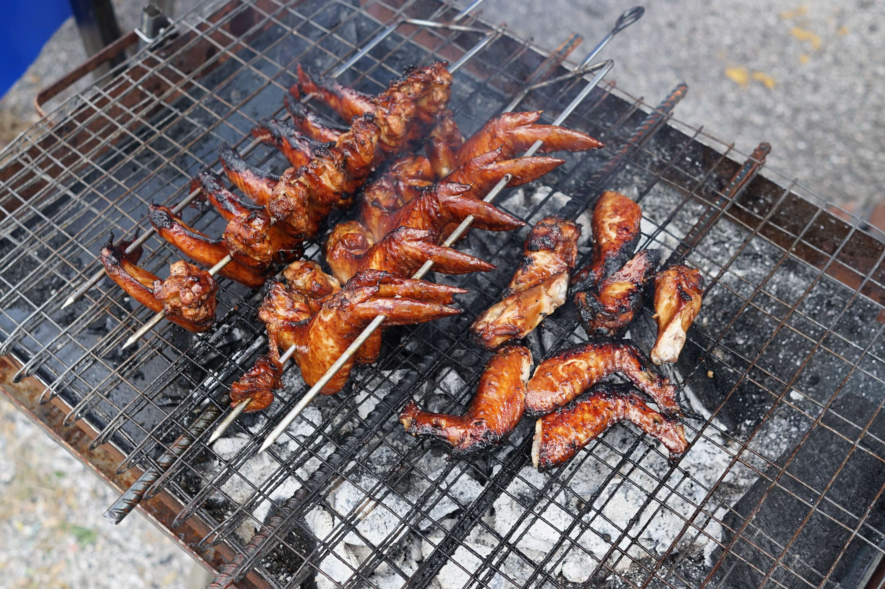
A good barbecued chicken wing starts from the aromatic marinate before it is flipped continuously over charcoal to impart a deeply smoky flavour.
216 Choa Chu Kang BBQ Chicken Wing
Ah Hwee BBQ Chicken Wing & Spring Chicken
Chong Pang Huat Eating House
Good Luck BBQ
Sin Bedok North BBQ Chicken Wing
Tong Kee Charcoal BBQ
Whampoa Barbeque Seafood & Chicken Wing
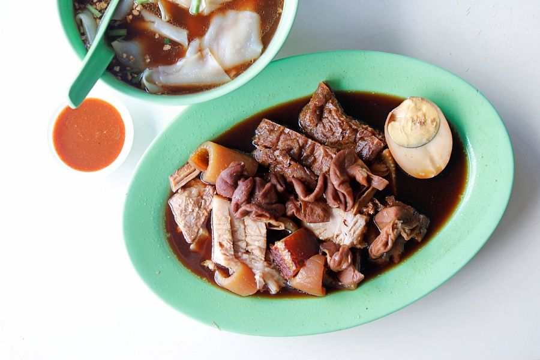
Image Credit: DanielFoodDiary
The Teochew dish pairs thick rice sheets with a assortment of braised pork cuts from belly to offal, and the best examples have a rich, complex gravy.
Guan Kee Kway Chap
Cheng Heng Kway Chap and Braised Duck Rice
Lao San Kway Chap
Chai Chee Kway Chap
Ying Yi Kway Chap Braised Duck
284 Kway Chap
Quan Lai Kway Chap
Ah Keat Pig’s Organ Soup and Kway Chap
Covent Garden Kway Chap
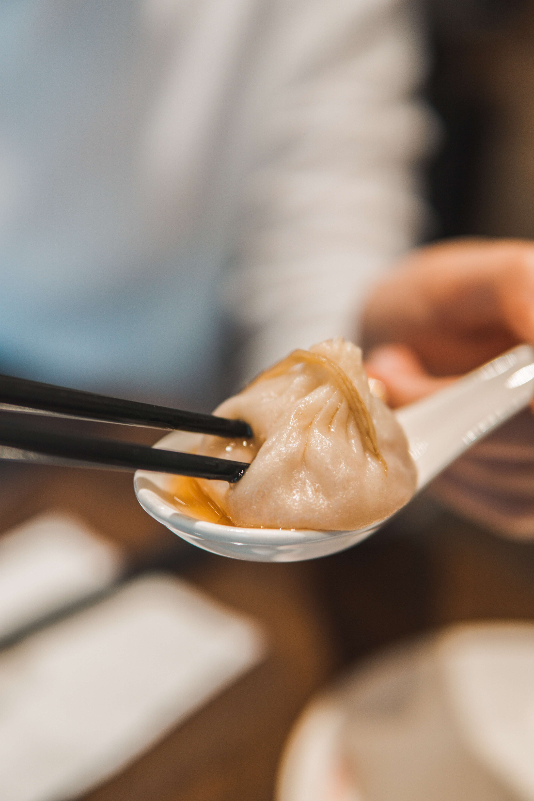
A more recent introduction to Singapore’s hawker scene, xiao long bao presents intricately wrapped dumplings filled with minced pork and a luscious broth. Best consumed when piping hot.
Zhong Guo La Mian Xiao Long Bao
Shanghai La Mian Xiao Long Bao
Supreme La Mian Xiao Long Bao
You Peng La Mian Zi Guan
Hong Peng La Mian Xiao Long Bao
Yu Chu La Mian Xiao Long Bao
Shan Dong Dong Ji La Mian Xiao Long Bao
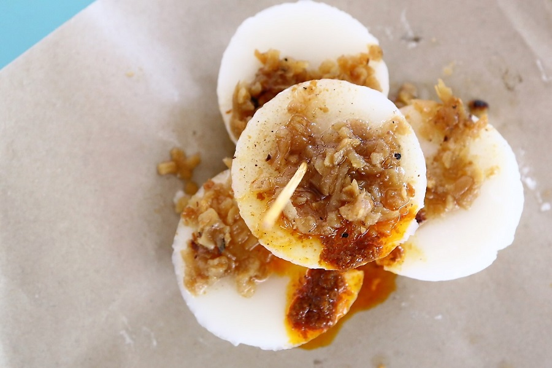
Image Credit: DanielFoodDiary
Loosely translated as ‘water cakes,’ this Teochew speciality is topped with preserved radish and chilli sauce, and are meant to be enjoyed any time of the day.
Bedok Chwee Kueh
Ghim Moh Chwee Kueh
Jian Bo Shui Kueh
Pek Kio Handmade Chwee Kueh
Xin Xi Chwee Kueh
Aunty Chwee Kueh
Kovan Chwee Kueh
Xiang Xiang Chwee Kueh
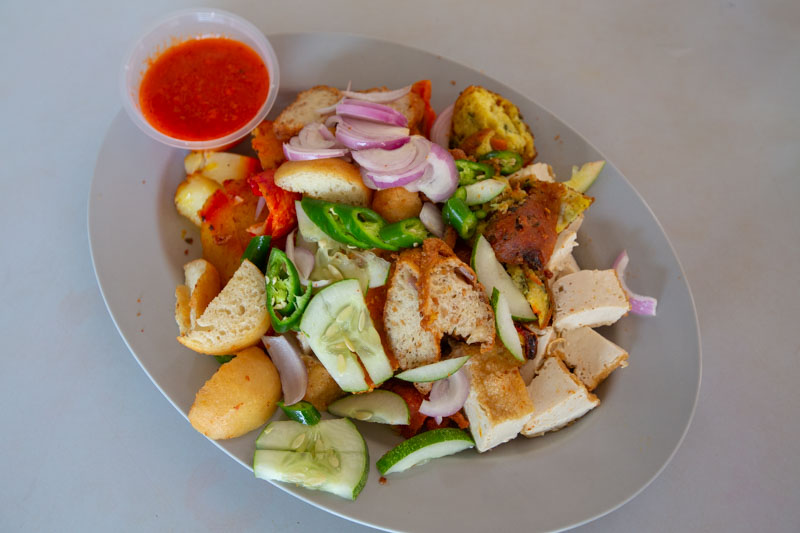
Image Credit: SethLui.com
Cobbled from the Bahasa word for ‘mixture', the Indian version of rojak involves assorted fritters, potatoes, cuttlefish, eggs, tofu, and fishcake, which are flash-fried, chopped up, and served with fresh cucumber and onion.
Abdhus Salam Rojak
Siraj Indian Food
Al Mahboob Rojak
Haji Johan Indian Muslim Food (Temasek Indian Rojak)
Habib's Rojak
Adam's Indian Rojak
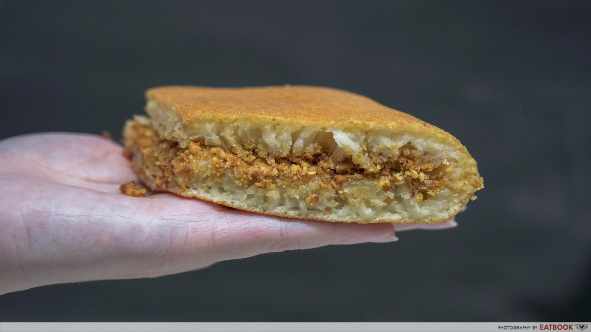
Image Credit: Eatbook
This breakfast staple traditionally features crushed peanuts and sugar folded into a fluffy pancake-like pastry, while more recent renditions offer green tea, cheese, and Nutella.
682 Min Jiang Kueh
Granny's Pancake
Munchi Pancakes
Tanglin Halt Original Peanut Pancake
Ah Long Pancake
Mian Mian Bu Duan
Belinda’s Traditional Pancake
Ah Lock & Co
The Pantree
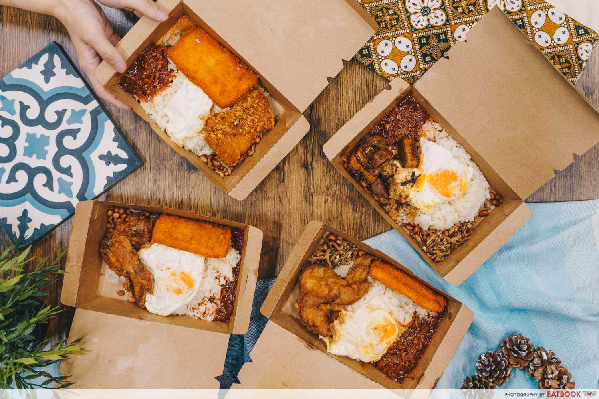
Image Credit: Eatbook
Nasi lemak is arguably one of country’s most iconic dishes. Typically consisting of coconut rice, fried chicken, eggs, peanuts, and a generous side of sambal, it’s the perfect dish for any time of the day.
Boon Lay Power Nasi Lemak
The Coconut Club
Bali Nasi Lemak
Uptown Nasi Lemak
Selera Rasa Nasi Lemak
Mizzy Corner
Lawa Bintang
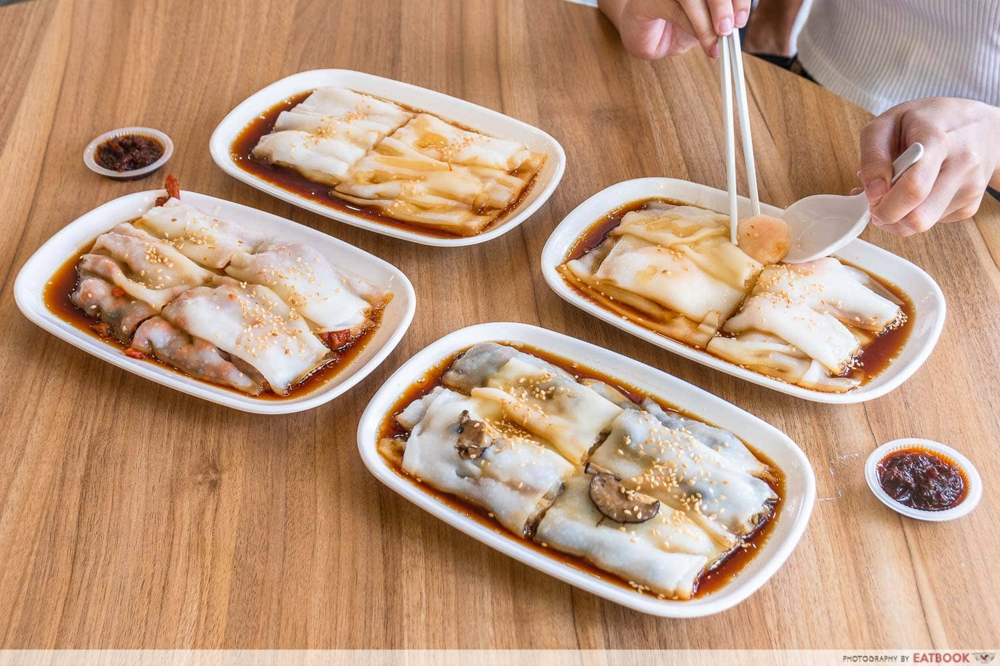
Image Credit: Eatbook
Brunch fare gets heaps of love nowadays, but for something just as tasty, comforting and cheap, there’s always chee cheong fun.
Anson Town
Chee Cheong Fun Club
Chef Leung's Authentic Hand-milled Rice Noodle Rolls
Chef Wei HK Cheong Fun
Duo Ji Chee Cheong Fun
Jia Ji Mei Shi
Pin Wei Hong Kong Style Chee Cheong Fun
Rice & Roll
Teck Hin Delicacies
Yin Ji Singapore
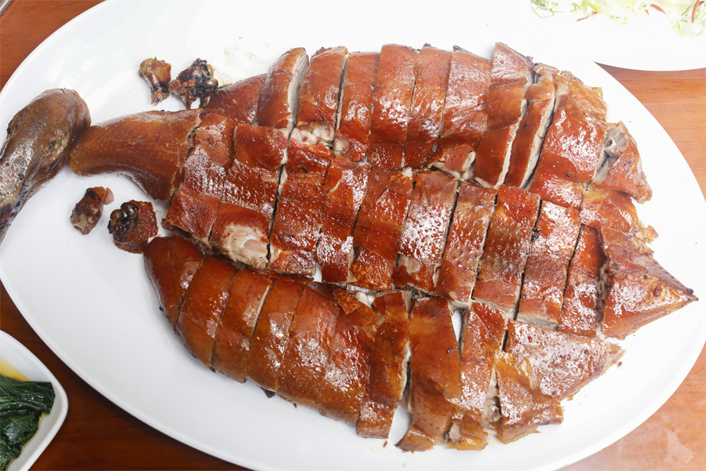
Image Credit: DanielFoodDiary
Tastier than chicken, healthier, more sustainable and cheaper than beef: duck is an oft overlooked dish that offers just as much joy as other meats.
Dian Xiao Er
Duckland
Kai Duck
Kam's Roast
London Fat Duck
Meng Meng Roasted Duck
Tung Lok Peking Duck
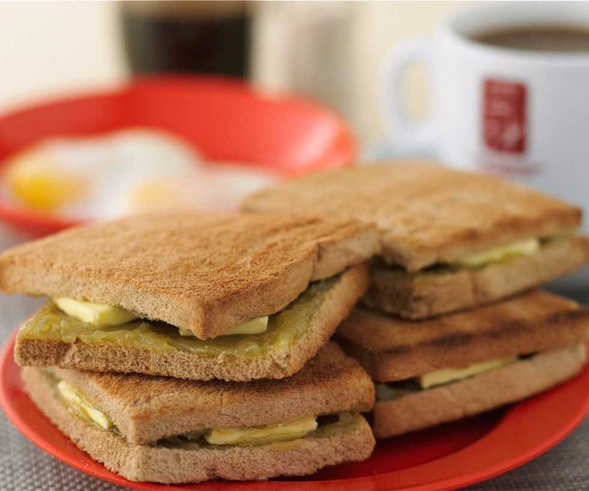
Image Credit: Ya Kun Kaya Toast
More than just a tourist must-eat, kaya toast is a classic breakfast menu that’s loved for its simplicity, not to mention the harmonious blend of sweet, toasty, and savoury textures and flavours all at once.
Tong Ah Eating House
Chin Mee Chin
Heap Seng Leong
Ah Seng (Hai Nam) Coffee
Keng Wah Sung
Good Morning Nanyang Cafe
YY Kafei Dian
Photography retrieved from Unsplash, DanielFoodDiary, SethLui.com, Eatbook and Ya Kun Kaya Toast
Content retrieved from Lifestyle Asia